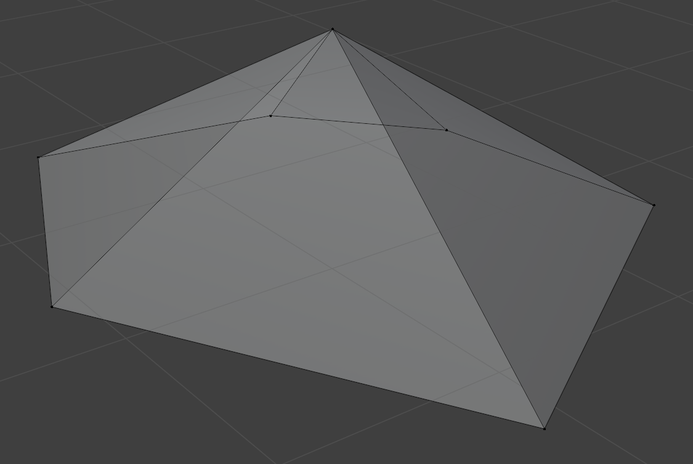
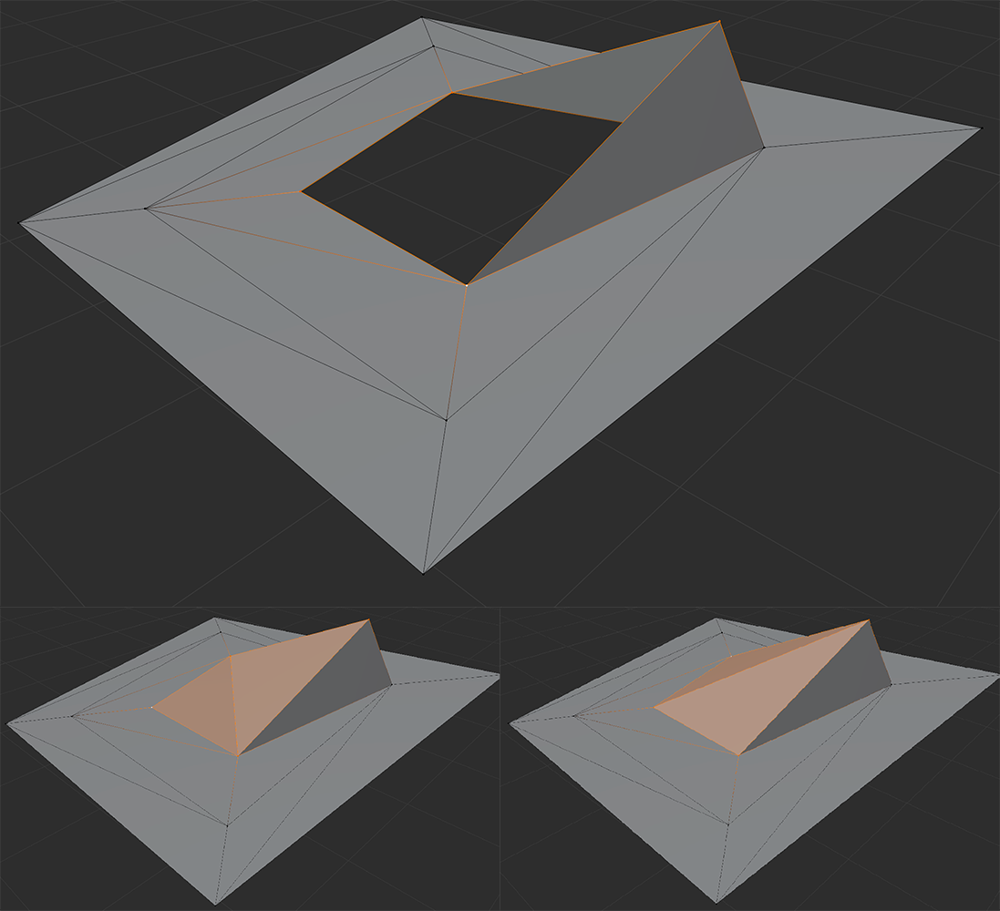
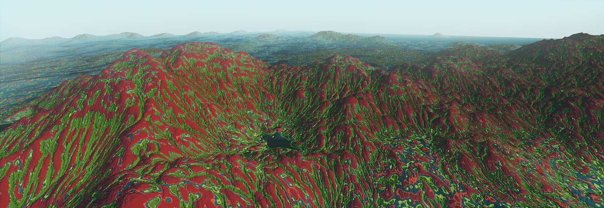

As our Vertex-Elimination Decimation had too many caveats to be used as a general purpose decimation algorithm - and even ran into problems with our target of terrain decimation - we'll have to come up with a different solution. So, let's try to address the largest problems we ran into: Dependency on "nice" geometry, that we'd end up ruining eventually anyways & needing to do extra steps to fix vertex-ordering in triangles, if requested.
Mesh Decimation by Vertex Elimination
Since Border-Alternating Terrain LODs require full control over which triangles are decimated, a custom mesh decimation algorithm is needed - and even if not, it'd be very convenient to have a fast, reliable & flexible way of decimation at our finger tips.
So decimating a mesh by eliminating the least-relevant vertices seemed like a novel & fast solution to the problem. But first, how do we want to eliminate those least-relevant vertices? [Cover Image: CC BY-NC 4.0]

Let's assume, we have this geometry-fragment, and we've determined, that the tip of this shape is the vertex we'd like to eliminate. In order to remove said vertex from our object, we have to ensure, that all neighboring vertices that previously connected to the tip do now connect to one another. So, by observing the vertices in the triangles that touch our chosen vertex, we can construct the polygon(s) of resulting area. This polygon can now simply be triangulated and our vertex can be removed entirely.
As simple as that may seem, this is much harder to implement in practice, that it may seem. Polygon triangulation in 3D isn't really a thing if the vertices don't all lie on a flat plane and even 2D polygon triangulation isn't trivial at all. As we're merely evaulating the suitability of this approach, we'll simply ignore those cases for now, and disallow any vertices from being eliminated if this would result in such a horrible case.
Regarding our goal of being able to leave singular vertices untouched, to line up with higher-fidelity LODs, this can be achieved very easily here, as the decimation procedure happens per-vertex anyways.
Error Calculation
In order to prioritize vertices that result in minimal change to the mesh, we need to define an error function. Fortunately, this is rather easy: The error of removing a the vertex at the tip can be formulated as the area between the re-triangulated base and the tip. As there's no singular valid triangulation of a polygon, this calculation unfortunately has to be repeated for all vertices and can't be blindly carried over to neighbors, as they may end up with a different triangulation, that would result in a different error value. To demonstrate, that not only one valid triangulation exists, let's consider the case of the following opening and its two different triangulations:

Performance
This approach is actually blazingly fast, even when forced to re-triangulate the resulting areas from the perspective of each vertex. To decimate the Statue pictured at the top of this entry to the point where all vertex eliminations would result in horrific polygons, this is what we end up with:
Error Calculation (incl. triangulation of base): 632,974 tris in 0.06161 s (3,449,320 non-skipped /s).
Error Sorting: 0.02669 s (11,859,484 /s).
Elimination & Re-Triangulation for 150,081 verts: 0.60876 s (246,536.4 /s).
Decimated 316,481 verts, 632,974 tris to 166,400 verts, 332,812 tris. (removed 15,0081 verts, 300,162 tris)
This required an incredibly fast chunked list data-structure to be written, which allows for blazingly fast random removals & inserts (removing old error values in a sorted list, inserting new error values at the correct position) and a bunch of other little tricks.
Complications
What should now be somewhat apparent from the Performance Output above is, that many of the vertices needed to be skipped, as it would've been too complex to triangulate the resulting geometry. This usually isn't as terrible with smaller models, but heavily impacts the flexibility of this algorithm. What can be somewhat worked around, but isn't particularly pleasing about this approach is, that triangle vertex-ordering (which is sometimes used to determine normal directions and allows for front- or backface culling) isn't automatically preserved and needs to be fixed during the decimation process, if this behaviour is relevant.
Border-Alternating Terrain LODs
With connected geometry - like terrain geometry - simply disecting the model into tiles and providing various LODs for each tile (with larger tile sizes for lower quality LODs) unfortunately leads to problems whenever different LOD layers meet, as with a naive approach LOD levels would disagree at their borders about the level of fidelity. Forcing higher quality rims onto lower quality levels leads to an escalation, where even the lowest quality LODs would need to provide the highest quality borders, even though they would never actually border any of the highest quality levels, but as every lower level needs to be able to connect to a higher and lower quality level seamlessly, this forces highest quality borders onto all layers, which will increase the geometric detail of the lowest-quality LODs so much, that it entirely defeats the purpose of having LOD levels in the first place, as all of the detail is spent on irrelevant high-fidelity borders.
In order to resolve this, LOD levels can't share borders across all layers. This makes streaming LODs and generating LODs a lot more complex, but completely eliminates the issue at hand: Let's assume we have this lowest-quality LOD0 of our terrain.
If we want to load a segment of LOD0, we need to split it into its four children, as otherwise we'd end up rendering some segments twice: Once with LOD0 and more with LOD1.
Now, to address the issue discussed above, we need to choose a different boundary, at which the lower level lods line up, so let's lock vertices at the dark-turquoise lines to match the fidelity of LOD2.
Let's assume the worst case: We're interested in more detail in the selected tile of LOD2. Simply loading in this tile, we would disagree with the neighboring tiles of LOD1 on the level-of-fidelity at the two borders highlighted in white.
To address this, loading the tile highlighted in white forces the turquoise tiles to be loaded at the same LOD, as they share the same dark-turquoise square.
In order to again address the issue of sharing boundaries between LOD levels, we force the vertices on the dark-green lines to match the vertices at LOD3.
Let's again assume one of the more interesting cases, and let's say we want to load a higher quality LOD at the tile highlighted in green. Similar as before, this leads to a disagreement on the level of fidelity on the borders highlighed in white.
As discussed before, loading in the tile highlighted in white forces the tiles in green to be loades as well. Actually any of these 4 tiles being loaded would force the remaining 3 tiles to be loaded in as well.
As two of the parent nodes of those nodes haven't been loaded in already, this also forces those parent nodes to be loaded in at a higher LOD as well, namely LOD2.
Implementing this intra-tile dependency isn't actually as tricky as it may seem, as it's always very straightforward to determine, which of the neighboring tiles need to be loaded in as well. A simple look-up-table suffices to store the vectors to the requires neighboring tiles being a certain child-index of a parent tile:
static const vec2i8 siblings_from_child_idx[4][3]{
{{-1, -1}, {0, -1}, {-1, 0}}, // top left
{{0, -1}, {1, -1}, {1, 0}}, // top right
{{-1, 0}, {-1, 1}, {0, 1}}, // bottom left
{{1, 0}, {0, 1}, {1, 1}} // bottom right
};
Now one can simply recursively iterate over tiles by starting at the root, splitting every tile that is sufficiently close and loading in all sibling tiles that need to be loaded alongside a given child.
Single Bounce Voxel Traced Global Illumination
Now, that we've voxelized our shaded scene, the main deferred pass can be followed up by an additively blended global illumination pass. In this pass we use the same g-buffers as inputs as in the regular deferred shading pass, but instead of looking up lights and shading based on surface color and normal, we take the world-position as a starting point, reflect the camera-to-world-space-vector at the surface normal, move slightly (with a small random offset) into the derived direction (until we're no longer in the vicinity of neighboring voxels), add some random rotation to the direction vector (based on material roughness) and trace through the voxelized geometry until we either run out of steps (in this case, we assume, that we've hit the skybox and sample from it), or we've hit a shaded or unshaded populated voxel, in which case we derive the color from said voxel.
Even just sampling with one ray per pixel results in reasonably smooth results when viewed at sufficiently high framerates. This will eventually be smoothed out by TAA, so screenshots won't end up looking horribly noisy in the final version.
Effective Voxel Tracing
Given a voxel position pos (i.e. [1, 4, 7] in the voxel field [0, 0, 0] ~ [10, 10, 10]) and direction dir, with the sampled voxel being cpos = pos + t * dir, we can immediately transition to the next voxel by using the following basic formula:
Generating Randomly Rotated Vectors For Rough Surfaces
Randomly rotating arbitrary vectors can be somewhat cumbersome, we use the following approach:
Take the unit up-vector ([0, 0, -1] in our case)
Randomly rotate it in x and y direction (or whatever two directions aren't up in your preferred coordinate system)
Generate a mapping matrix, that rotates the unit up-vector onto our original vector using the previously discussed RotateAlignVectors function.
Transform the rotated up-vector with the mapping matrix
As this doesn't actually rotate arbitrary vectors but merely aligns the rotated vector with the up-vector, this approach doesn't suffer from the same issues as more straightforward implementations.
Hardware Voxelization
To be able to cheaply trace rays through the rendered scene, all static geometry is hardware voxelized through a clever combination of multisample anti-aliasing (MSAA) and a geometry shader that maximizes rasterized surface area.
As the color-resolution of the voxelized scene doesn't need to be particularly high or temporally stable, voxel colors are dithered and logarithmically encoded with only 8-bits per voxel (3 bits red, 3 bits green, 2 bits blue with 0 = no voxel).
Performant shading is provided through a world-space-clustering of the voxelized area, which works very similarly to the view-space clustering discussed previously, but instead of splitting the view-frustum into smaller pieces, the entire world-space in voxelizer range is split into regions, approximated by bounding spheres (if the voxelized area doesn't rotate, the bounding sphere calculation only needs to happen once, as all subsequent transforms are merely translations of the pre-existing clusters), then the bounding spheres are intersected with the light frustums in a cpu-side lighting pre-pass and stored in a separate lookup table.
Clustered Deferred Lighting
To significantly reduce the number of required shadow map lookups in a fragment shader, the view frustum can be subdivided into many small frustums in a pre-process (which we approximate by their bounding sphere). We can now check for the intersection of the light-view-frustum and view-frustum-segment-bounding-sphere and reference the relevant light indices of a given segment in a small lookup table.
Retrieving the corresponding cluster index in the fragment shader is very straightforward, as the only information required to resolve the fragment to a cluster is the screenspace texture coordinate and linearized depth ratio between the near and far plane. All of these inputs are already commonplace in deferred shading setups.
Additionally, such a lookup can easily be utilized to implement a basic volumetric lighting shader.
Procedurally generated PBR textures
To fill our procedurally generated worlds with unique looking environments, we render the corresponding colors for a given region directly into the texture atlas.
As material indexes are directly passed to the shader, alongside the world-position of the corresponding terrain, we can select the correct type of texture and procedurally generate the values to the atlas. This results in a lot of variety, even if the same material is used:
Snowy Rocks
Ice
Blending is done on by simply applying a noise function to the barycentric coordinates that are used to fetch the per-vertex material index in the fragment shader from a texture. Sadly it's currently not possible to use different noise patterns for different kinds of material combinations, but the current noise pattern results in very pleasing material transitions already (see video in the header)
This way we can create a wide variety of procedural textures and selectively apply them to the underlying terrain. These are all of the material types we currently offer:
Improving and Optimizing the Texture Atlas
The original implementation was already capable of processing hundreds of thousands of triangles per second, but the utilization of the texture area wasn't particularly good, as the coverage quadtree initially preferred placing triangle clusters at high-layer node positions. This left arbitrarily sized holes in the quadtree that are neither particularly easy to find, when looking for available space for future clusters nor necessarily good spots to place clusters into, as the total available area is quickly fragmented by the first couple of clusters.
We'd much prefer clusters to be placed closer to existing clusters, so we'll modify the atlas slightly: After the final dimensions have been found, we allow the quadtree to attempt to move the current bounds to the top left by one node per layer if possible. This achieves much better atlas coverage - still not optimal, but improved to the point that models with double the unit-size can consistently fit into the atlas now. Apart from the coverage benefits, for some models this ends up positively impacting the runtime performance as well, as it's much faster to find empty spots with the improved coverage.
After a bunch of smaller optimization (mostly bloom-filters to avoid costlier randomish-memory-access-dependent-conditionals) we're somewhere between handling 500k - 1M Triangles per Second on a single thread.
Stanford Dragon Texture Coordinates & Model Render
To actually get a decent performance benchmark of the texture atlas, I fed it the entire stanford dragon model (871k Triangles), as well as a bunch of other large standard models (like a simplified version of Stanford Lucy).
2.01443 s (432,422 triangles per second) without moving cluster bounds to the top-left
0.87905 s (990,936 triangles per second) with moving cluster bounds to the top-left
Although, with the simplified Stanford Lucy model however (28k Triangles), the old method appears still to be faster - probably because of the larger variance in terms of triangle area:
0.02538 s (1,105,358 triangles per second) without moving cluster bounds to the top-left
0.05534 s (506,846.8 triangles per second) with moving cluster bounds to the top-left
Fast Texture Atlas for Procedural Geometry
Since world chunks are going to be represented with consistent, but procedural geometry, we need an efficient way of generating texture information for chunks to make manual changes and unique-looking locations possible. To sample and store the corresponding texture, we need an efficient way of generating texture coordinates for our procedural geometry.
As many existing texture atlas implementations aren't particularly fast or assume that the geometry already comes with UV partitioning and texture coordinates that only need to be assembled into one big atlas, I chose to implement a new texture atlas system for the engine.
The foundation of the texture atlas is a coverage-quadtree where nodes are either empty, partially-covered or full. Nodes are stored in a large buffer as there's no need to stream information on demand. The last layer is merely represented as a large bitmap, rather than the actual nodes containing information about the pixel contents. Utilizing this coverage-quadtree it's fairly straightforward to check if a certain amount of space is currently available in the atlas.
The atlas procedure consists of two steps:
Setup
Add all triangles with 3d position and vertex indexes to the atlas. The atlas calculates the side lengths and angles of the triangle and takes note of existing triangles that share an edge with the current one.
Texture Coordinate Generation
After all triangles have been added, they are first sorted by area. Then chunks of triangles are attempted to be added to the atlas branching out from the initial large triangle's edges.
There's some special cases that have to be handled here, like when all three vertexes of a triangle are already present in the atlas and connecting them into a new triangle would result in a reasonable approximation of sizes and angles in respect to the original 3d geometry. Likewise, in order to ensure that the resulting areas don't get out of hand with curved geometry, as angles are used to construct the 2d triangles in the texture atlas and the resulting area may slowly creep up or down in size compared to their 3d counterparts, mismatching triangles are rejected from the current batch and will either be added separately or as part of another triangle-cluster.
Whenever no more connecting triangles would fit into the area available in the texture atlas, triangle bounds are marked as covered and we move on to the next possible collection of triangles - starting with the next largest triangle that hasn't been placed yet.
Obviously this doesn't result in optimal utililzation of the texture atlas, especially as the bounding rectangle of a triangle is a terrible estimate of it's actual coverage, but this comes with a large performance benefit, as no triangle rasterization is required and the texture generation part can be offloaded to the GPU.
Pixels, Shell Texturing & Grass Height
Achieving tripple-A quality graphics isn't entirely feasible with just the limited time of one person, so choosing a distinct, pleasant, and lower-fidelity art-style is very important. To force myself to think more about the broad picture than the low-level details, I halved the display resolution, using my trusty old aliasing-pixelartify algorithm for a neat pixely look.
Now to the fun part: Moss. Well, shell texturing.
To supplement the grass and enable moss growth on rocks and other similar surfaces, we create a vegetation-height map that is a half-terrain-resolution approximation of the height of grass - or only moss, if the values are too low to allow grass to grow. We can now color the grass depending on the length to achieve some more visual interest.
For moss, we create two LODs of instanced heightmap textures with varying height attribute. We create a moss height, normal direction & color change texture that is statically used for all moss and sample the depth from this texture in the fragment shader to conditionally discard (I don't want to, but alpha blending would be a lot worse) fragments.
Giving the height channel some bumps here and there and sampling a different color depending on the moss height leaves us with a nice fluffy mossy texture that nicely complements the grass.
Grass Rendering & Chunk View Culling
Flat untextured terrain however isn't particularly pleasing to look at, so - after implementing a chunk view culling system and reducing the draw-calls for terrain rendering to one draw-call per chunk type and refactoring the renderer a bit, let's have a look at grass rendering.
I'm not the biggest fan of alpha textured grass rendering as the constant overdraw fragment discarding sounds very unpleasant to me. As modern GPUs are capable of rendering a lot of instanced geometry very quickly and having individual segmented blades of grass allows for nice curving grass in the wind, we'll use that approach. Depending on how close the chunk containing the grass is to the camera, we'll use a different LOD on the grass segmentation as even reasonably close chunks can visually represent blades of grass with just a single triangle without a perceptual loss in quality.
This doesn't cover chunks yet, that are further off in the distance, but depending on how well we can tune the shaders later on, we might be able to either render billboards with large amounts of grass, or even fake the existence of grass entirely with a decent grass-landscape texture.
Terrain Chunk Streaming & Atmospheric Effects
In order to traverse such a large scale terrain, LOD & streaming need to be considered immediately. Chunks of different sizes are streamed into fixed-size textures and are dynamically loaded when needed.
Whenever a large chunks would contain a chunk with vertexes that are closer than a set distance from the camera, the chunk is split and the contained chunks of higher fidelity are streamed in.
To reduce the pop-in artifacts usually seen in even tripple-A productions, we use local maxima - rather than average terrain height - to construct LODs.
Obviously this leaves visible gaps in the landscape wherever multiple chunk-types meet, but we'll deal with specific meshes to solve this problem at a later date.
A low LOD texture atlas
Atmospheric Effects
The sun position is now 'rotated' into the coordinate space mapped around the 'flat' planet and camera position using a vector alignment matrix:
The way the sun passes through the atmosphere is approximated with an iterative shader that draws an equirectangular view and approximates rayleigh and mie scattering with a fixed number of samples. The scale of the planetary system and atmosphere have been adjusted to achieve earth-like atmospheric conditions.

Micro-Biome Extraction
After the terrain has been generated and eroded, regions need to be classified into biomes based on the physical properties of their surroundings. To calculate these biomes like various grass types wherever the top soil is grass a noise map can be sampled. However this isn't entirely accurate as especially regional & global elevation changes and water proximity can influence biome parameters significantly.
Therefore we compute a signed distance field of water and one that maps terrain height, blur the height map over a large area and then compute the local difference to an areas neighbors. This leaves us with the water map and the map shown above for local terrain elevation changes.
Using these two maps and a noise buffer, we can derive micro-biome features like mossy stones near water or in crests, small puddles can be turned to mud, large elevation change inhibit the growth of trees or tall grass, ...
Wind Erosion
With our newly developed surface wind simulation, we can now erode the surface terrain. Terrain that's close to the wind height will be eroded more than terrain that's further from it and wind speeds influence how far particles are dragged when eroded. The various terrain layers have different properties of how easily they can be erroded by wind & water.
As the eroded particles are dragged through the wind, the terrain is iteratively checked for matching height as the particles slowly descend based on their weight.
Similarly to the wind simulation, eroded particles are added onto a separate buffer and are applied to the new terrain after all cells have completed their erosion procedure.
Simulating Wind
In order to arrive at realistic wind conditions to drive wind erosion, both atmospheric and surface conditions must be simulated. The atmospheric wind simply boils down to
Generally air is dragged in the opposite direction of the planetary rotation through the coriolis force.
The air in each atmospheric cell warms up based on solar energy reaching the surface (and slowly cools to the temperature of outer space when there's no incoming solar energy)
Based on the temperature and the air density at any position, calculate the pressure
Move air-mass (density) velocity around to attempt to equally distribute air pressure
The last step can be applied iteratively to support fine-grained air movements. Whilst iterating the exiting wind buffer, resulting wind is accumulated in a separate buffer to be applied after all cells have been processed.
One trick that specifically helped simulating sub-cell movements over multiple iterations - by slightly breaking the laws of physics - was to multiply the wind speeds in cells that don't have enough wind speed to make any pressure move from one cell to the next. This eventually tips the scales and makes the wind in those low pressure cells travel small distances over large amounts of time consistently.
Atmospheric Air Density and Wind Speed Vectors
Surface Wind
Surface wind derives its temperature from the reflectivity and temperature emission of the underlying material. Surface Wind can be imaginged as a sheet of cloth that's being dragged over the terrain surface. Wind Speeds slow down (in my implementation even reverse slightly) when moving against higher terrain. This may result in the wind height being raised at a given position, or the wind preferring another direction over the current brute-force approach.
Falling winds to the contrary even enjoy a slight speedup to their wind speeds. This results in pressure zones being separated by mountain ranges whilst wind bursts through the cracks in order to equalise the pressure on both sides.
Surface winds are slightly dragged along with the general atmospheric wind.
Surface Air Density and Wind Speed Vectors
Orbital Dynamics
In order to have semi-accurate climatic conditions producing terrain with only one hot and one cold zone, an somewhat excentric elliptic orbital path with fine tuned rotational velocity and direction is required. Solving orbital dynamics formulas - even with a fixed star that isn't affected by the satellites mass - proved quite difficult however.
In Polar Coordinates, the orbital distance from the origin at angle theta with orbital parameters a and b can be expressed like this:
radius(theta) := (a * (1 - b * b)) / (1 + b * cos(theta))
This alone doesn't help much however, as the velocity at each position can easily be calculated, but woulnd't translate to a closed form solution and I didn't want to resort to step-wise simulation that'd be hard to rely on or accurately predict with different time steps. So, I was able to construct a function angle(time) to derive the radius by pluggin the result into the radius function:
In order to arrive at a combined mass that actually produces a period of 2 * pi, we have to calculate the mass from orbital parameter a:
combinedMass(a) := (2 * a * pi / 2) / (pi * pi)
As the combined mass of the two orbital bodies doesn't change with the system, it can be calculated on initialization when setting the other orbital parameters.
Planets, Average Solar Energy on the Surface, Current Solar Energy
Hydrolic Erosion
The layered terrain can be eroded using simulated water-droplets that carry material based amounts of sediment around. Finding the path to the deepest reachable point (or until all water has evaporated) for each block of terrain is vastly faster than simulating only one step at a time, but produces much rougher terrain than stepwise erosion. Stepwise erosion smoothes out the terrain and forms large water streams that then decend down to the valleys, where the small crests created from the first few water droplets in the decent-per-droplet approach won't widen and will preferrably be used by later droplets that run down similar paths, not resulting in broadening of common water paths.
Layered Terrain Before / After Water Erosion
Layer Based Terrain
Terrain is built in layers, the bottom layer is non-erodable bedrock. Depending on a signed-distance field, a noise layer and two cubic slopes a certain height of terrain of a given layer will be added on top of the existing terrain. The signed distance field chooses the min and max value from the two cubic slopes (basically a min- and max height) and the noise value (between 0 and 1) is used to smoothly interpolate between those two values. The generated terrain is rough at first, but erosion will massively improve and shape those layers later.
const float_t min = a_min * x * x * x + b_min * x * x + c_min * x + d_min;
const float_t max = a_max * x * x * x + b_max * x * x + c_max * x + d_max;
const float_t height = lerp(min, max, noiseValue);